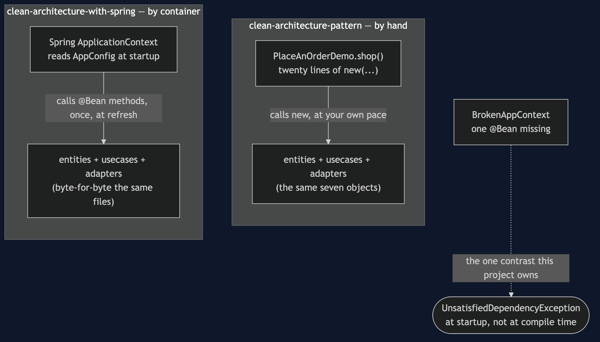
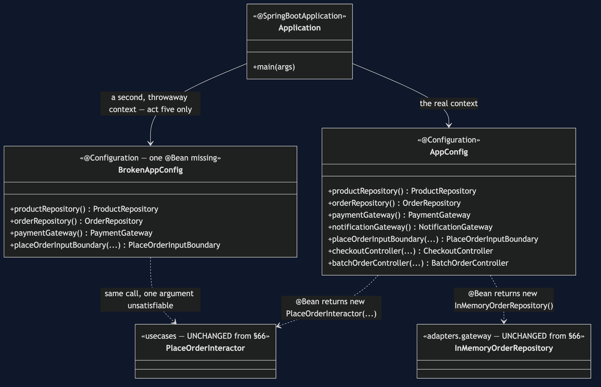
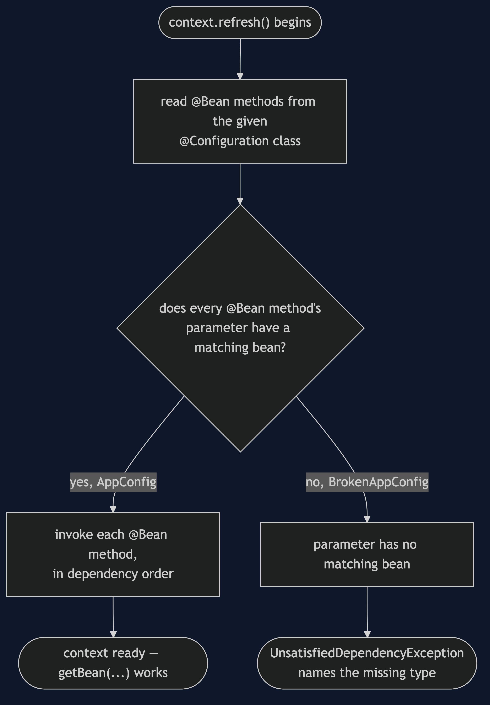
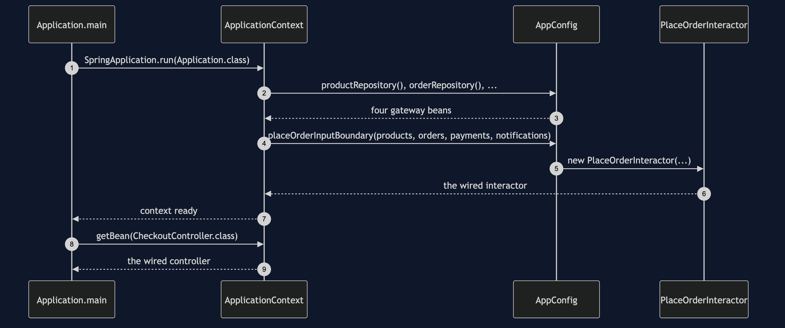
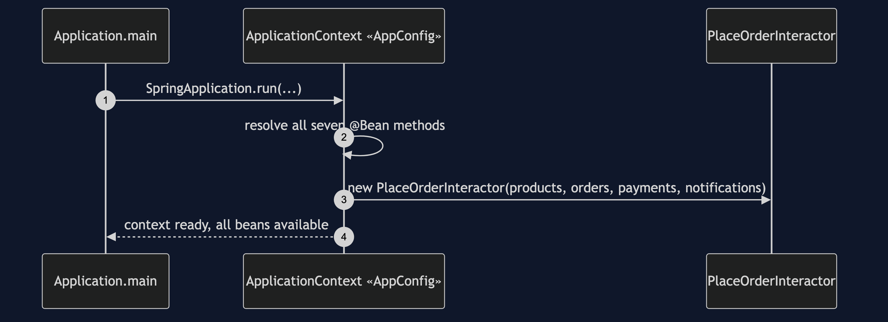
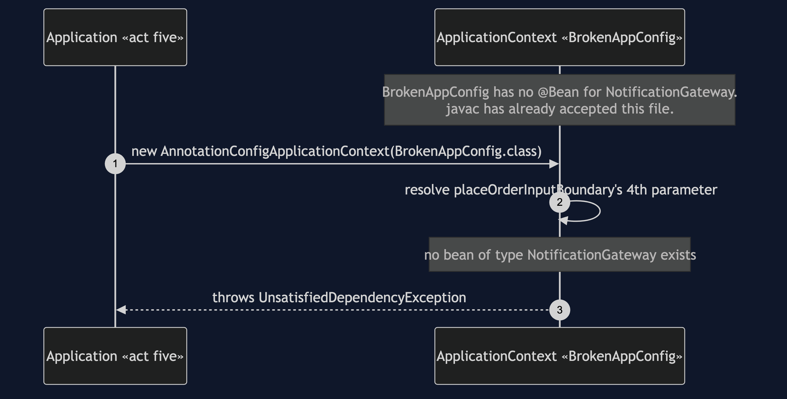

Clean Architecture with Spring Pattern
src/main/java/com/jk/explore/cleanspring/
├── Application.java @SpringBootApplication — the five acts
│
├── config/ ← the ONLY new circle. Spring lives here alone.
│ ├── AppConfig.java @Bean per object — Spring's version of shop()
│ └── BrokenAppConfig.java identical, minus one @Bean — the forced failure
│
├── entities/ ← UNCHANGED from clean-architecture-pattern
├── usecases/ ← UNCHANGED from clean-architecture-pattern
├── adapters/ ← UNCHANGED from clean-architecture-pattern
│ ├── controller/ CheckoutController.java · BatchOrderController.java
│ └── gateway/ InMemory*.java · FileBackedOrderRepository.java
│
└── naive/usecases/ ← UNCHANGED — the shortcut, for the same test
└── NaivePlaceOrderInteractor.javaEvery file under entities/, usecases/, adapters/ and naive/ is clean-architecture-pattern's file, copied without a single line changed. src/test/java/.../cleanspring/ArchitectureTest.java checks the same concentric rule — and a second rule asserting Spring appears nowhere in those four packages, only in config/ and Application.java.
§66's identical graph, wired by a container instead of by hand — so the one contrast a container adds can be shown directly: hand-wiring fails at compile time; container wiring fails at startup.
This is project 67 of architectural-design-patterns, and it depends on Clean Architecture — §66 — being watched first, always. It is only legible to someone who has already seen the hand-wiring.
Run
./gradlew runFive acts, plus the scene this project exists for.
FIVE. Hand-wiring fails at compile time.
Container wiring fails at startup.
removing an argument from PlaceAnOrderDemo's hand-wired
new PlaceOrderInteractor(...) does not compile.
removing @Bean notificationGateway() compiles cleanly --
watch what happens when the container starts instead:
STARTUP FAILED: No qualifying bean of type
'com.jk.explore.cleanspring.usecases.NotificationGateway' available:
expected at least 1 bean which qualifies as autowire candidate.And the acceptance line every project in this category prints identically:
ACCEPTANCE
order ord-1001 for cust-8801: PLACED, 3 lines, £382.50
stock ESP-001 3, GRD-014 1, BNS-220 38
charged cust-8801 £382.50 once
sent 1 confirmation to ada@example.com
refused: not enough stock, unknown product, payment declinedTest
./gradlew testEleven tests. The same concentric-architecture rule as §66, reused; ArchitectureRuleCatchesTheShortcutTest, reused; and this project's own WiringContrastTest, which is the whole point — it builds a working context from AppConfig and asserts BrokenAppConfig throws UnsatisfiedDependencyException naming the missing type.
Technologies and versions
See docs/dependencies.md for the full account — what Spring is, why this project uses it, what it costs, and that skipping this project loses none of the architecture.
| What | Version | Why it is here |
|---|---|---|
| Java | 21 | The repository standard |
| Gradle | 9.2.1 | The wrapper in this directory |
| Spring Boot | 4.1.1 | The whole subject of this project. spring-boot-starter only — no web starter, no database starter. Newest generally available release. |
| Spring Boot Gradle plugin / dependency-management | 4.1.1 / 1.1.7 | Version-manages the starter; no dependency in this project names its own version |
| JUnit 5 | 5.10.2 | Test runner |
| ArchUnit | 1.5.0 | Test-only; the same concentric rule as §66, plus a rule confirming Spring stays out of the reused packages |
Spring appears in no other project in this category. Projects 63 to 66 have no framework in any build file, so a reader who wants the architectures without the framework gets them.
Learning Material
| Document | What it covers |
|---|---|
docs/dependencies.md | Read this first. What Spring is, why, what to install, what it costs |
docs/problem-statement.md | What this project is actually about — it is not the architecture again |
docs/clean-architecture-with-spring-pattern-explained.md | Recognition, the one contrast, what this project does not do |
docs/class-diagram.md | The three new classes, and the graph they build |
docs/architecture-diagram.md | The hand-wired and container-wired compositions, side by side |
docs/data-flow-diagram.md | A bean's journey from @Configuration to a working graph, or a startup failure |
docs/sequence-diagram.md | Who calls whom — written for a listener with the screen off |
docs/uml-diagram.md | The container succeeding, and the container failing |
docs/animation.html | Three steps in a browser |
docs/prerequisites.md | What you need to know — starting with §66 |
docs/session.md | A 40-minute taught session, shorter than the rest of the category on purpose |
docs/spec.md | The generated specification |
docs/youtube.md | Title, description and chapters |
The two compositions, side by side
The inner boxes — entities, use cases, adapters — are identical either way. Only the outer box, the one that builds them, differs.

The three new classes
AppConfig and BrokenAppConfig both return the same new PlaceOrderInteractor(...) call the hand-wired project already made.

A bean's journey
Both configuration classes enter this diagram at the same node — nothing distinguishes them until the resolution check partway through.

Who calls whom, in order

Both sequences
One. The container wires the whole graph.

Two. The container fails — at startup, not at compile time.

Video
Built from video/scenes.py by video/build_video.sh. The rendered file is not committed.
When this is worth the extra dependency
Worth it the moment a real application has enough objects that hand-wiring them all in one method stops being readable — most real applications, past a handful of classes. Not worth it for learning the architecture itself: that lesson is complete, and arguably clearer, with no framework in the way at all, which is why Clean Architecture is its own project rather than a scene inside this one.
Where this sits
Project 67 — the last of architectural-design-patterns — and the only one with a framework in its build file. It depends on Clean Architecture being built and published first, copies that project's entities, use cases and adapters unchanged, and owns exactly one comparison the hand-wired project cannot show on its own: what a container costs, and what it buys, honestly priced.